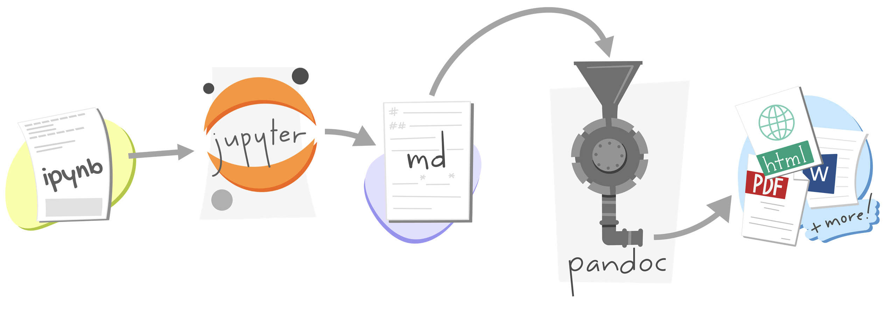

Hello, Quarto!
Unlocking Dynamic Reproducible Documents
A Quarto Tutorial for Scientific Communication
Pre-workshop
Setup
1. Tools: Have VS Code (with Jupyter and Quarto extensions) ready to go
2. Software: Download and install Python and the pre-release version of Quarto:
- Python 3: https://www.python.org/downloads/
- Quarto 1.5.53: https://quarto.org/docs/get-started/
3. Packages: Install the following packages:
Terminal
python3 -m pip install tabulate pandas seaborn palmerpenguins great_tables plotnine jupyter4. Exercises: Go to bit.ly/quarto-scipy24-exercises, click on “Use this template” then “Create a new repository”. Once your repository is created, clone it locally and navigate to the repo folder.
Welcome
Code of Conduct
Attendees at SciPy 2024 are subject to the NumFOCUS Code of Conduct.
Be kind to others. Do not insult or put down others. Behave professionally. Remember that harassment and sexist, racist, or exclusionary jokes are not appropriate for NumFOCUS.
All communication should be appropriate for a professional audience including people of many different backgrounds. Sexual language and imagery is not appropriate.
NumFOCUS is dedicated to providing a harassment-free community for everyone, regardless of gender, sexual orientation, gender identity and expression, disability, physical appearance, body size, race, or religion. We do not tolerate harassment of community members in any form.
Thank you for helping make this a welcoming, friendly community for all.
About me
Professor of the Practice
Department of Statistical Science
Duke UniversityDeveloper Educator, Posit

- Teaching data analysis in computational notebooks for 10+ years
- Teaching and using Quarto for 3+ years
About you
Please share
- Name
- Professional affiliation
- What do you hope to get out of this tutorial?
03:00
Meeting you where you are
These materials are pitched at someone who:
knows some Python + Markdown
has worked in VS Code and/or Jupyter Lab
wants to learn about Quarto
I’ll teach you
More Markdown
New Quarto formats
New Quarto projects
Workshop structure
My turn
- Lecture segments
- Feel free to just watch, take notes, browse docs, or tinker around with the code
Our turn
- Lecture segments + live coding
- Follow along with live coding
Your turn
- Practice exercises for you
- Work on your own or with the person next to you
Getting help
During my turn and your turn segments – raise your hand
During our turn segments – also feel free to raise your hand for questions but if your question seems specific to your setup, I might come around and help during the next your turn break
Setup
1. Tools: Have VS Code (with Jupyter and Quarto extensions) ready to go
2. Software: Download and install Python and the pre-release version of Quarto:
- Python 3: https://www.python.org/downloads/
- Quarto 1.5.53: https://quarto.org/docs/get-started/
3. Packages: Install the following packages:
Terminal
python3 -m pip install tabulate pandas seaborn palmerpenguins great_tables plotnine4. Exercises: Go to bit.ly/quarto-scipy24-exercises, click on “Use this template” then “Create a new repository”. Once your repository is created, clone it locally and navigate to the repo folder.
. . .
Let’s get started!
What is Quarto?
Quarto …
is an innovative, open-source scientific and technical publishing system compatible with Jupyter notebooks and all your favorite plain text markdown editors

With Quarto …
you can weave together narrative and code to produce elegantly formatted output as documents, web pages, blog posts, books and more, with…
- consistent implementation of attractive and handy features across outputs: tabsets, code-folding, syntax highlighting, etc.
- defaults that meet accessibility guidelines as well as features that enable good practices for producing accessible documents
- native multi-lingual support for multiple languages like Python, R, Julia, Observable, and more via the Jupyter engine for executable code chunks
A tour of Quarto
Sit back and enjoy! … or follow along with 1-1-hello-penguins.qmd.
- Rendering a document
- Customizing formats:
pdf,docx - Inserting images
- Customizing output format options:
code-fold,toc - Code cells: labels, alt-text, execution options
- Cross referencing figures and tables
- Lightbox effect
- Converting between Jupyter Notebooks and plain text markdown documents
How it Works
Revisit: What is Quarto?
Quarto is a command line interface (CLI) that renders plain text formats (.qmd, .rmd, .md) OR mixed formats (.ipynb/Jupyter notebook) into static PDF/Word/HTML reports, books, websites, presentations and more.
. . .
#| eval: false
#| echo: true
#| code-line-numbers: "|1|2|10|15|16"
Usage: quarto
Version: 1.5.53
Description:
Quarto CLI
Options:
-h, --help - Show this help.
-V, --version - Show the version number for this program.
Commands:
render [input] [args...] - Render files or projects to various document types.
preview [file] [args...] - Render and preview a document or website project.
serve [input] - Serve a Shiny interactive document.
create [type] [commands...] - Create a Quarto project or extension
use <type> [target] - Automate document or project setup tasks.
add <extension> - Add an extension to this folder or project
update [target...] - Updates an extension or global dependency.
remove [target...] - Removes an extension.
convert <input> - Convert documents to alternate representations.
pandoc [args...] - Run the version of Pandoc embedded within Quarto.
typst [args...] - Run the version of Typst embedded within Quarto.
run [script] [args...] - Run a TypeScript, R, Python, or Lua script.
install [target...] - Installs a global dependency (TinyTex or Chromium).
uninstall [tool] - Removes an extension.
tools - Display the status of Quarto installed dependencies
publish [provider] [path] - Publish a document or project to a provider.
check [target] - Verify correct functioning of Quarto installation.
help [command] - Show this help or the help of a sub-command.Under the hood

jupyterevaluates Python code and returns a.mdfile along with the evaluated code- Quarto applies Lua filters + CSS/LaTeX which is then evaluated alongside the
.mdfile by Pandoc and converted to a final output format
Under the hood
with a wider lens…

jupyterorknitrevaluates Python, Julia, R, or Observable code and returns a.mdfile along with the evaluated code- Quarto applies Lua filters + CSS/LaTeX which is then evaluated alongside the
.mdfile by Pandoc and converted to a final output format
Aside: Lua filters
- Here is an example of a Lua filter that converts strong emphasis to small caps, from https://pandoc.org/lua-filters.html:
return {
{
Strong = function (elem)
return pandoc.SmallCaps(elem.c)
end,
}
}. . .
- Lua filters written by R/Python/Julia developers should be interchangeable between formats - not language specific!
. . .
- We won’t go into the details of writing Lua filters in this workshop, and you don’t need to worry about learning about Lua filters unless you’re working on extending Quarto.
From the comfort of your own homeworkspace


Rendering
in VS Code
with the Quarto extension installed and enabled
Option 1: In the Terminal via
quarto renderOption 2: Using the Quarto Extension and clicking on Preview
in JupyterLab
In the Terminal via quarto render:
Terminal
quarto render document.qmd # defaults to html
quarto render document.qmd --to pdf
quarto render document.qmd --to docxQuarto formats
One install, “Batteries included”
Quarto comes “batteries included” straight out of the box:
HTML reports and websites
PDF reports
MS Office (Word, Powerpoint)
Presentations (Powerpoint, Beamer,
revealjs)Books
Manuscripts
…
. . .
- Any language, exact same approach and syntax
Many Quarto formats
| Feature | Quarto |
|---|---|
| Basic Formats | html, pdf, docx, typst |
| Beamer | beamer |
| PowerPoint | pptx |
| HTML Slides | revealjs |
| Advanced Layout | Quarto Article Layout |
| Cross References | Quarto Crossrefs |
| Websites & Blogs | Quarto Websites, Quarto Blogs |
| Books | Quarto Books |
| Interactivity | Quarto Interactive Documents |
| Journal Articles | Journal Articles |
| Dashboards | Quarto Dashboards |
Your turn
In VS Code, open the hello-penquins.qmd file. Render the document to HTML.
In the YAML: Add an
authorfield and add your name.Add some text and style it with bold, italics, etc.
Modify the figure to add units to the axis labels: grams for body weight and mm (milimeters) for flipper length. Make sure the changes are reflected in the HTML output.
Change the html theme to
sketchy. (See https://quarto.org/docs/output-formats/html-themes.html for documentation on HTML theming.)
10:00
Questions
Any questions / anything you’d like to review before we wrap up this module?
A pause
Where does the name “Quarto” come from?
. . .